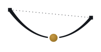

Orchestrateur
Première connexion
Portrait global
Agrégation des cotations pour l'ensemble des mesures. Chaque cellule rapporte la recommandation calculée par ville tandis que la colonne MRC résume la moyenne régionale des recommandations.
Gestion des accès
Générez un code d'accès par personne. À sa première connexion, la personne saisit son identité ; ses cotations sont rattachées à sa ville.
Réponses par répondant
Consultez les cotations individuelles, par clé d'accès. Dans le Portrait, les réponses d'une même ville sont agrégées (moyenne des répondants).
Gestionnaire de projets
Chaque projet a sa propre liste de villes, ses codes d'accès et ses cotations. Le projet actif se choisit dans le menu déroulant en haut.
Calculateur d'impact fiscal
Simulez la recette d'une mesure sur le rôle d'évaluation réel du projet. Les curseurs jouent sur des agrégats calculés au serveur — aucune donnée parcellaire ne quitte la base.
Réglages — sources de données
Le rôle d'évaluation (donnée ouverte MAMH) est chargé par l'équipe ; les villes transmettent leurs intrants au format universel (une ligne par matricule, leurs colonnes). Tout se greffe par le matricule.
Cotation des mesures
Pour chaque mesure, indiquez d'abord si elle est déjà en place chez vous — si oui, il n'y a rien d'autre à coter. Sinon, répondez aux questions : + favorable · 0 neutre · − défavorable. Tout est enregistré automatiquement.
Vous ne savez pas ? Laissez la question vide — « 0 neutre » veut dire « ni favorable ni défavorable », ce n'est pas la même chose. Répondez à ce que vous connaissez et passez le reste.